Meksikon konsulaatista hankin turistikortin ja matkatoimistosta lentolipun Los Angelesiin. Partioaitasta ostin maailman viimeisen itäsaksassa tehdyn Pouch-merkisen kanootin, kun edellinen lahosi kahdessa vuodessa. Edellisestä Pouchista otin kuitenkin lasikuidulla vahvistamani erikoiskestävät kaaret. Uuteen Pouchiin liimasin valmiiksi paikkalaput niihin paikkoihin, joihin tulee heti reikä. Lisäksi liimasin sekä köliin että reunoihin runsaasti lisää kulutuspintaa. Itse asiassa melkein koko kanootin alapuoli tuli vahvistettua kaksinkertaiseksi. Alkuperäinen itäsaksalainen vinyylivahvisteinen PVC-muovi oli kertakaikkiaan liian ohutta, minkä sanon kolmen tuhotun kanootin antamalla kokemuksella.
------
30/10/93 Läksin lentsikalla Los Angelesiin. Tässä kaupungissa olen kumma kyllä sekoillut aiemminkin ja kuukausikaupalla. Olen ajanut kaupungin poikki useampia kertoja polkupyörällä. Fillaroinut Venturat ja Death Valleyt. Nukkunut Sunset streetillä ja Malibun takana olevilla vuorilla. Niinpä tiesin heti panin taksikuskin viemään Marina Del Reyn, sieltä kun on helppo kipata vene vesille. Yö Marina Del Rey Marriotissa maksoi $70.
31/10/93 Lasikuitua, merikortti, vesisäilio, spriita, kerosiinia. Juvenauta. Kyselin Del Reyn West Marine-myymälässä vedenpuhdistuspillereitä, mutta niillä oli jotain parempaa. Käsitoiminen vehje, joka poistaa suolan merivedestä. Saamari maksoi $500, mutta kokeilin sitä heti laiturissa ja se toimi, voi ihmettä. Tämmönen mulla olisi pitänyt olla jo vuonna 1975 Ahvenanmerellä. Toinen yö Marriotissa.
1/11/93 Merelle, merelle, siella tuulee mainio myötätuuli. Pääsin purjeen kanssa melkein 20 kilsaa etelään päin. Erittäin vaikea päästä maihin myrskyjen takia, melekein kaaduin. Leiriydyin Redondo beachille. Rantavahti kävi aukomassa päätä, mutta luopui sitten. Tämähän on hätätapaus!
2/11/93 Opettelin hyökyissä rantautumissa Redondo Beachilla. Feathercraft-kanootissa (800 dollarin köyhän miehen versio) rantautunut itämäisen näköinen opettajatar neuvoi, että on parempi hypätä pois ja työntää kanoottia. Se neuvo tepsi erittäin hyvin! Tämä menetelmä tuskin toimisi ilman sivuponttoonia. Sivuponttoonin kanssa on paljon helpompi nousta kyytiin ja pois kyydistä hyökyjen ulkopuolella. Rantavahti muuten kävi taas aukomassa päätä.
3/11/93 Pakkasin kamat ja lähdin merelle. Keskisuuret surfit, muttei mitään ongelmia. Ainut ongelma oli se, että rantautumismanoveerien takia käytän märkäpukua ja se on hieman liian kuuma. Feathercraft-henkilö sanoi, etten pääse rantaan ennenkuin Long Beachin satamassa. Paskapuhetta. Pääsin helposti Palos Verdes Pointin jälkeiseen lahdelmaan. Täysin autio. Jyrkkien rinteiden päällä taloja, mutta polku tänne alas on tosi vittumainen. This is heaven. Tein litran verran vettä uudella vesipumpullani. Siihen meni noin 40 minuuttia. Rankkaa, mutta helpompaa kuin se, että kiipeää ylös ja etsii vesihanan 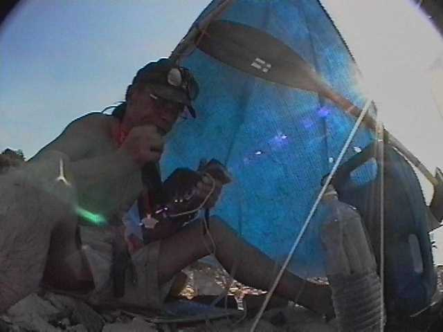 .
4/11/93 Tänään en ainakaan lähde mihnään.
5/11/93 Tänäänkään en lähde mihnään. Paikalliset käyvät jo huomauttelemassa. Pitäs käydä kaupassa.
7/11/93 Saamarin läskit, uhkasivat poliisilla. Siirryin pari kilometriä etelämmäs. Piti matkustaa Long Beachille, mutta päätin piruuttaan kokeilla rantautumista tyrskyissä. Pieleen meni. Kanootista meni yksi rima paskaks ja VHF-radio kastui. Mä kun luulin, että se olisi vedenpitävä. Pakko ostaa uusi.
Hiphei. Huolellinen juomavedessä uittaminen ja purkaminen auttoi.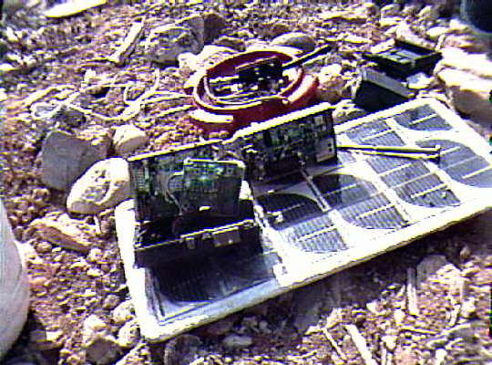 VHF-radio toimii taas!
Hehe, yksi Mafia-perhe kalasti tuossa rantsussa keihäällä koko päivän. Saamansa kaksi (2) kalaa he lahjoittivat minulle.
8/11/93 KFI-more stimulating talk radio 640 khz. Aamuyöllä kello 3 aikaan aamuyöstä kävelin takaisin sinne, missä leiriydyin ensimäisen kerran. Kätkin sinne märkäpuvun yläosan, kun ajattelin, etä se on tuiki tarpeeton. Sitten sukeltelin koko päivän. Näin ystävällisen hylkeen, ison ravun, mustekalan ja erilaisia kaloja. Tarvitsisin ehdottomasti harppuunan, perhana. Long beachille on kuienkin 20 kilsaa, siellä varmaan olisi harpuunakauppa. En kuitenkaan uskalla jättää kamoja tänne.
9/11/93 Tänään olin tosi poikki, en jaksanu yhtään mitään. Yöllinen kävely ja sukeltelu päälle otti mehut pois. Pitäslähteä muualle. Onneksi on kunnon aallokko nousemassa, 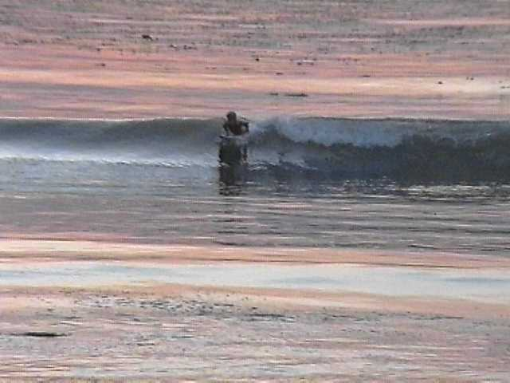 launelautaulijat on innoissaan.
11/11/93 Myrsky jatkuu toista päivää. Voi makailla ja kuunnella radiota.
14/11/93 Ei taaskaan liikettä minnekään. Nyt mä olen ollut samassa paikassa jo viikon. Sain ongella mustekalan. Se paska piiloutui kanootin sisälle, niin että jouduin lopulta purkamaan kanootin. Perhanan limaklöntti. Oikea menetelmä olisi ollut heti tarttua siihen tukevalla otteella ja paiskata se yli laidan. Mutta kun en kehdannut. Sitten muistin, että välimeren kalastajat mielellään roikottavat mustekaloja rasvaisisa kourissaan. Ne eivät siis ole myrkyllisiä tai pure.
15/11/93 Vesi on kylmää. Tai siis kylmempää kuin viikko sitten. Pitäs mennä muuanne. Toi on hyvä homma, asua Los Anglesisissa ja elää 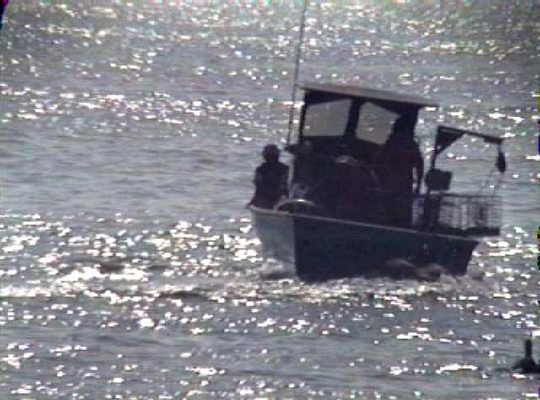 ravustamalla.
16/11/93 Lähdin lopulta liikkeelle. Mukavat tasaset laineet ja myötätuultakin, niin että voi käyttää purjetta. Long Beachin 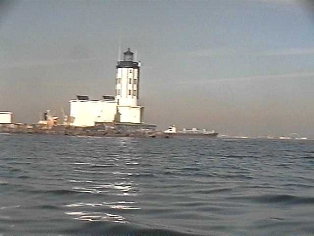 satamassa 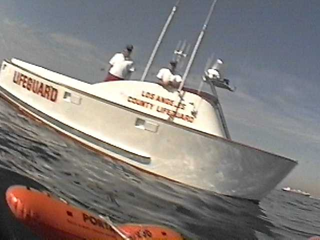 Hengenpelastusmiehet tulivat heti moottoriveneellä kuulustelemaan . Epäilivät varmasti, että olen venepakolainen. Huutelin hieman VHF-radioon ja näiden kyttien reaktioista päättelin, että radion lähetyspuoli on kunnossa. Kun tiedustelin misssä voisin viettää yöni, ne neuvoivat menemään Queen Maryn ohi satamaan, siellä on paljon majataloja.
17/11/93 Räkä juttu. Nukuin Long Beachissa 170 dollarin hotellissa ja lähdin sieltä 7.00 soutamaan eteläänpäin. Sujui hyvin, mutta sitten alkoi tuulla etelästä ja päätin majoittua yhteen lahteen. Siellä oli kuitenkin sotalaivan satama ja SotaPoliisit tuli moottoriveneellä ajamaan mut 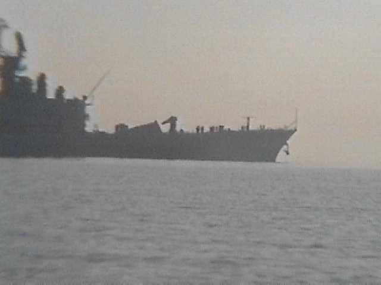 helkkariin. Palasin pari kilsaa takaisin ja siirryin 69 taalan hotelliin.
19/11/93 Emmä tykkää tästä, makailen täällä hotelissa, enkä osaa päättää mitä tehdä. Eteläänpäin meno tuntuu tuiki hankalalta, koska se on vaan tasasta hiekkarantaa täynnä kaikenmaailman huvilaa ja hotellia. Ja tyrskyt on tasasen karmeeta. Vaikka pääsisinkin hengissä maihin, niin sieltä mut ajettas heti pois. Jos mä lähdenkin junalla Yumaan ja lasken Colorado-jokea Californian lahdelle.
20/11/93 Yumassa poliisi tuli huutamaan, kun nukuin junapysäkillä. Eikä Meksikoon pääse jokea myöten, täytyy ottaa taksi. Kävin kysymässä US-tullimiehiltä, josko tätä kautta pääsee takas. Pääsee, jos on viisumi. Rämä bussi Meksikaliin. 24 dollarin hotelli. Halpaa, täällä mun olis pitäny olla alunperinkin. - Saastaista ilmaa Mexicalissa 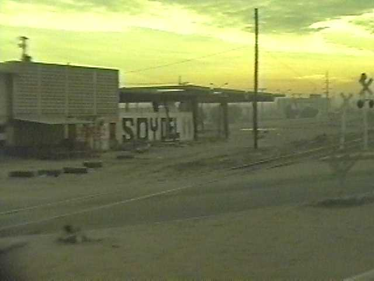
21/11/93 Bussi San Felipeen. Hiphei, lopultakin Cortezin meren rannalla ja kanootti koossa. Ystävällinen Dave Summers-niminen henkilö antoi vinkkejä. Antoi mulle vuorovesitaulukon ja kertoi että täällä käytetään VHF-kanavaa numero 9 kutsuihin. Hyökyjen läpi rantsuun ja teltta pystyyn. 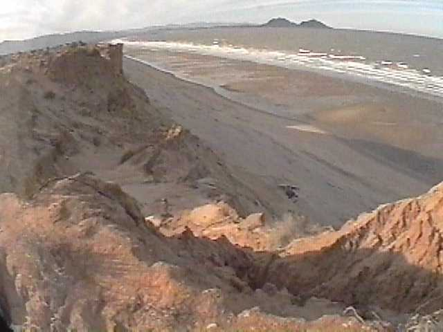 Hiekkaa, mutta siihen lienee pakko tottua, hohhoijaa.
23/11/93 07:54 Ylen uutiset 15400 khz
24/11/93 Yritin lähteä merille meloakseni takaisin San Felipeen ja käydäkseni kaupassa. Muttei se millään onnistunu. Kanootti oli heti täynnä vettä. Alkaa jo pänniä tämä rantsu. Kun tosta menee joskus mopoja ja autojakin. Tyypillisiä junttikuskeja, tahallaan metelöivät. Tuulee vieäkin vitusti. [sh. Ois pitäny olla eilen liikkeellä.
26/11/93 Tuulee edelleenkin ja entistä pahemmin. Hautaudun hiekkaan! Rakentelin kanootista ja rannalta löytämistäni rojuista tuulensuojaa. Teltan lepatus ja paukkuminen alkoi ottaa hermoon. Sitäpaitsi aloin epäillä, että se teltta ennenpitkää hajoaa. Meneehän se aika tässäkin.
27/11/93 Täällä San Felipen tienoilla maataan edelleen. Kylmä 15 astetta.
29/11/93 Täällä makaillaan edelleenkin. Kalastus sujuu. Tuuli hellitti ja meloskelin ulapalle. Tämmöset 30 sentin ahvenat kävi hullun lailla vieheen kimppuun. Maistuivat ihan kivoilta. 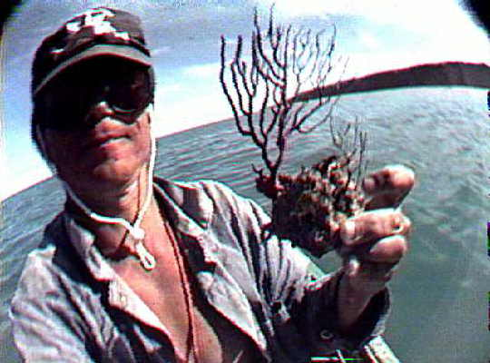
1/12/93 Lasikuitua. Petroolia. Vieheitä. Laastaria. Lähdin lopulta liikkeelle 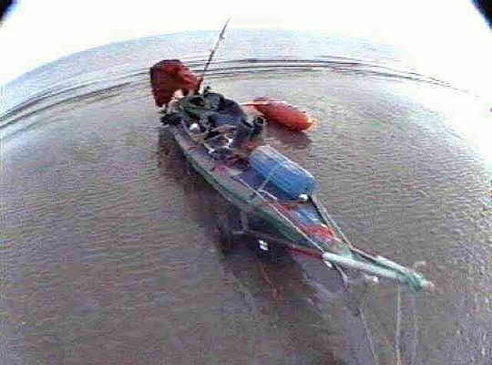 aikaan , meloin San Felipeen ja ostin tarvikkeita niin että riittää. Kohti etelää. Kun paikalliset kävivät kysymässä, että minne olin menossa, niin vastasin jotta "LaPaziin tietysti". Eivät uskoneet. Merkillistä, olisiko tässä jotain ongelmia. - Tyypillinen meksikolainen kalastusvene, onks se ny nimeltään "bonga"? 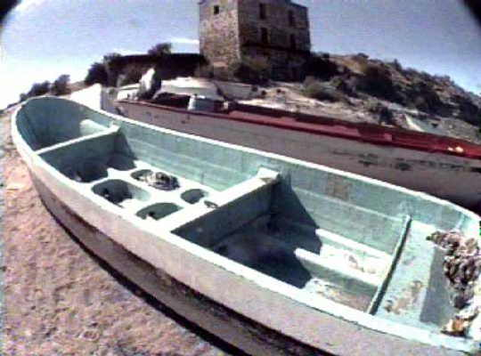
18/12/93 Tämmöstä se on nykyajan tekniikka. Kirjoitin näitä muistiinpanoja tiedostoon, jonka talletin Atari Portfolion RAM-muistiin. Kun paristo meni tyhjäksi, hävisivät myös kahden edellisen viikon muistiinpanot. Kyllä tämä on ollut hirveetä kamppailua. Aina pari päivää pääsee eteenpäin ja sitten on 5 päivää hyrskyjä. Rantautuminen on melkein aina yhtä vaikeaa. Kun on isoja kiviä ja aallokko, niin miten ihmeellä tämmösen rättikanootin saa ehjänä rantsuun. Ruoka on loppunut ja röökit jo kymmenen päivää sitten. Kalastus onneksi sujuu. Tonnikalat on paraita. Cortezin meren purjehdusoppaassa mainittiin, että 80 kilsaa San Felipestä etelään on Puertoricos-niminen kylä, jossa on kauppa. Puertoricos-niminnen kylä kyllä oli, mutta ei kauppaa. Jäljistä päätellen kauppa ja huoltoasema olivat menneet vasta äskettäin konkkaan. Omituisia 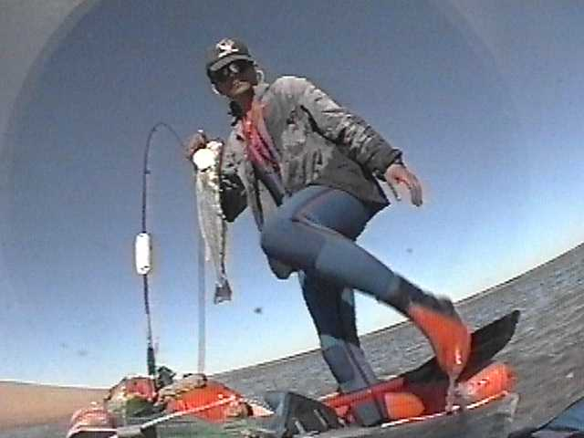 täällä, ei niitä kirjoista löydä.
Muistaakseni Willard Pointissa kertoi ystävällinen amerikkalainen kesämökkiläinen läheisestä ravintolasta, josta sainkin ostettua muutaman kilon riisiä ja röökiaskin. Mutta eiväthän ne kauan kestäneet. Ainut mahikseni on päästä Bahia Los Angelesiin, siellä kun on majataloja, Puhelin ja vaikka mitä. Bahiaan ei pitäs olla kuin alle 100kilsaa. Kaikki on kuiteski ollu niin vaivalloista, että kyseinen matka kestää varmaan viikkoja.
19/12/93 30 kilsaa yhdessä päivässä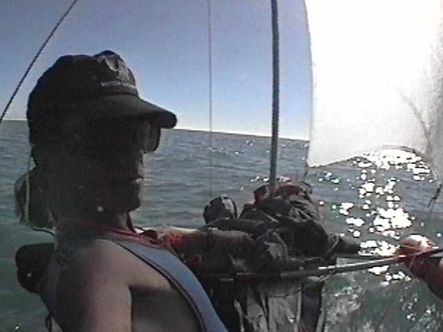 kanssa . Se on kyllä ennätys. Onkohan vika minussa vai kanootissa, mutta en mä koskaan pääse semmosia 50 kilsan päivämatkoja kuin kaikki tosi kanoottimiehet. Satelliittinavigaattorin mukaan kun pidän yllä mukavakseni katsomaani melontanopeutta, niin pääsen jotain 3-4 kilsaa tunnissa. Kun yritän pitää yllä 5-6 kilsan tuntinopeutta, niin hyydyn tunnissa. Tällä kanootilla ei kerta kaikkiaan pääse tämän nopeammin. Kerran Alaskassa yritin pysyä parin naiskanoteereejan kyydissä. Niillä oli lasikuitukajakit ja melko vähän lastia ja joka vedolla ne pääsivät kaksinverroin pidemmälle kuin mä.
20/12/93 Heti aamusta virisi mukava purjetuuli. Keskipäivän aikoihin se muuttui kuitenkin myrskyksi. Pääsin kuiteksi 18 kilsaa eteenpäin muutamassa tunnissa. Rantauduin viime tingassa ja hätäpäissäni erittäin kevottomaan rantsuun, jossa oli metrin kokosia kivenjärkäleitä. Tämmösessä tapauksessa oikea rantautumistapa on se, että hypätään ajoissa pois ja valitaan sopiva tasanen kivi, jota aallot silloin tällöin pyyhkivät, jolle kajakki voidaan työntää. Näin teoriassa. Käytännössä esimerkiksi kanootin työntely ja ohjailu vedestä käsin on tosi vaikeaa. Bahia Los Angelesiin olisi vain 40 kilsaa.
21/12/93 Kamala tuuli edelleen.
22/12/93 Kiva tuuli jatkuu edelleen. Vietän näemmä joulua tässä. Mutta aurinko paistaa.
23/12/93 Räkä jatkuu edelleen, kiitos, kiitos. - Troolari myrskyssä 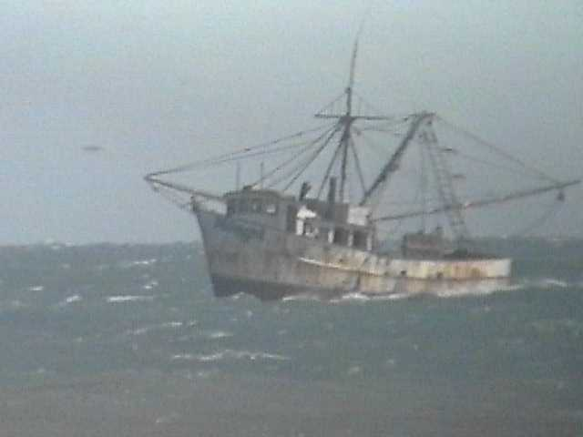.
24/12/93 Hassua joulua, myrsky jatkuu. Vituttaa tosi rankasti. Siirsin teltan uuteen paikkaan, kun hiekkaa meni joka paikkaan, mutta tuuli kääntyi sopivasti yön aikana. Kiitos joululahjasta. Vietänköhän synttäripäivää täällä?
25/12/93 Myrsky jatkuu. Tämä on jos viides päivä samassa paikassa. Jauhoja pari kupillista. Olis edes kahvia. Yritin aamulla kävellä kanjonia ylös katsoakseni onko siellä tie, mutten jaksanut kuin vähän yli kilsan päähän. Ei kai muutaman viikon dieetti voi lyödä näin veteläksi. Olen varmaan sairas.
26/12/93 Käsikrammpeja vettä tehdessä. Eipä tee enää mieli tupakkaa vaan suklaata enemmän. Tosi omituinen väsymys vaivaa. Okei ruokaa on vähän, mutta sitä kuitenkin on. Vatsa tuntuu kyllä tyhjältä päältä katsoen. Kamerakotelosta meni lasi sököksi 20 päivä. Nyt se kamera ei suostu enää olemaan kuiva, vaikka kotelo onkin kunnossa. Akkutilanne on kehno. Olis pitäny jo aikoja sitten hankkia itselleen toinen aurinkoparisto. Hiphei, tuuli näyttää tyyntyvän. EI näy enää yhtään vaahtopäitäkään. Aallot on vaan vielä liian isoja. Mutta huomenna!
27/12/93 Pääsin just ja just ulos sieltä kivikosta. 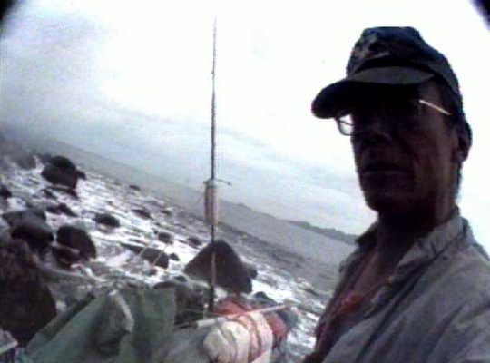 Vene tuli vettä täyteen. Vasta puolen tunnin äyskäröinnin jälkeen pääsin liikkeelle. Puolen päivän aikaan tuli hyvä purjetuuli ja laskettelin kertarysäyksellä tämän 40 kilsaa Villa Vitta-motelliin. Yö maksoi 10 taalaa. Huimaa.
28/12/93 Auch, tässä hotelissa ei ole sähköä öisin, ne tekee vissiin kaiken sähkön dieselillä. 11:00 virtaa alko taas tulla. Saamme akkuongelmat taas vahaksi aikaa kondikseen. Tein pimeitä ostoksia. Ison oljylampun kanta (!? 32 pesoa). Spraypullon mustaa maalia. Olen sekoamassa. Paikallinen meksikaani sai minut vakuuttuneeksi siitä, että San Rosaliaan melotaan täältä neljässä päivässä. Multa menee siihen kyllä kuukausi, mutta ottia tuota. Huomenna lähdetään. Makuupussia täällä ei näemmä saa pestyksi. No eeei sitte. Pitäs soittaa, mutta aurinkokäyttösen satelliittipuhelimen luona oli jonoa.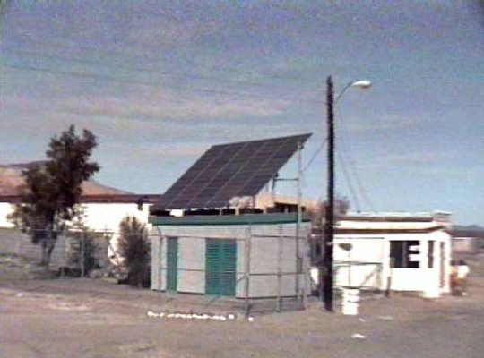
29/12/93 Hieno lähtö aamulla kello 8, purjeet ja kaikki. Tunnin päästä alkoi kuitenkin tuulla ja päädyin tänne Bahian Pohjalle, kiitos, kiitos. Olen varmasti joutunut jotenkin meren epäsuosioon. Nyt tiedämme, että kun alkaa tuulla, on tunti aikaa maastoutua. Eli ei saa olla 4 kilsaa kauempana rannasta. Isoin mahdollinen salmi, joka voidaan ylittää, on siis 8 kilometriä leveä. Ei mitään mahiksia mennä Kinoon, kun isoimmat salmet on 20 kilsaa. Meri oli vatkannut vispikermansa vaahdoksi. Oi jumalat! Oli tilinteon hetki! Appelsiinijuomasta hävisi heti korkki ja se tyhjeni (tietysti) rantautumisen yhteydessä. This is pretty crammy spot to be. Tässä vetää. Olis pitäny jäädä 10 dollarin hotelliin, mutty kun ne hilseet yritti kusettaa toisen yön maksatuksen yhteydessä. Olen varmaan jotenkin tyhmä. - Isoja kaktuksia täälläpäin. 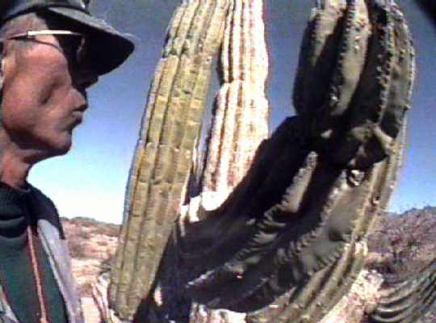
30/12/93 Nyt tuuleeee kun arvasin. Emmä lähteny mihkään. Nythän on niin, että kun KFI-Los Angeles sanoo että on "breezy" tai "gusty", ni niin on täälläkin. Eilen oli LA:ssa vielä "wind advisery". Tätä politiikaa aion noudattaa vastakin turhan sekoilun välttämiseksi.
31/12/93 Jälleen yksi sytkäri kastui ja muuttui kelvottomaksi. Samperin kelvottomia. Tuo kivi nimittäin juuttuu kastumisen jälkeen koloonsa ja parin sytyksen jälkeen ei enää tule kipinöitä. Muutaman kerran olen onnistunut irrottamaan kiven lamppuöljyllä, useimmiten en. Minkäläinen olisi se vedenkestävä sytkäri. Mitehköhän tollaset pietsosähköset sytkärit kestää kestää suolavettä? Tänään on mun syntymäpäivä. Olenko vasta 41-vuotias. Tunne itseni kyllä 48-vuotiaaksi. Siltä näytänkin.
2/01/94 Hyvin meni pari päivää, pääsin 42 kilsaa B de LAsta, mut taas tuulee. Yhdessä niemessä lähellä Bahiaa oli kanoottinaisia märkäpuvuissa. Näyttivät istuvan harvinaisen hyvin nämä pukineet.
3/01/94 Kyllä on hyvä tuo 30 peson öljylammpu. Näkee jopa kirjottaa. Pitäs vaan keksiä sopiva lasi. Yritin tehdä lasia rantsusta löytämistäni pulloista. En millään onnistunut leikkaamaan lasiveitsellä semmoista lieriötä, joka olisi tasanen molemmista päistä. Tein sitten säilykepurkista jonkimoisen tuulensuojen. Taas vä-syt-tää rutosti. Olen varmaan syönyt liikaa. Vaikka näytäs olevan mainio menosää.
4/01/94 Lähdin aamukolmelta kuutamolla ja pääsin kenties 25 kilsaa melomalla koko päivän. Eipä ollut paljon hyötyä tästäkään. 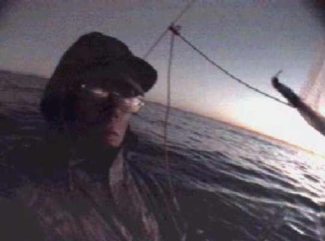
5/01/94 Alkoi tietys tuulla etelästä. Pääsin ehkä kymmenen kilsaa eteenpäin. - Hylkeen muumio. 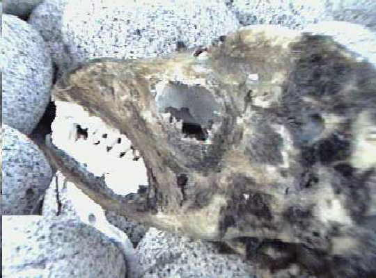
6/01/94 Tunnin verran eteenpäin ja sitten alkoi taas tuulla kiitos, kiitos. - Ihmeellinen luola. 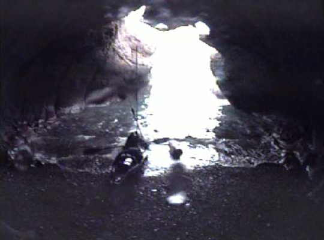
7/01/94 Tuuli heti aamusta, ei mitään mahiksia!
8/01/94 Neljä kilsaa eteenpäin ja sitten taas loppu. Samantekevää, vietän täällä loppuelämäni.
9/01/946 21 kilsaa melomalla. 114 kilsaa jäljellä. 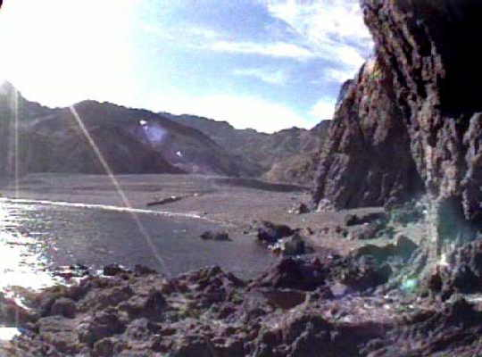
10/01/94 30 kilsaa purjeella. 84 jäljellä. 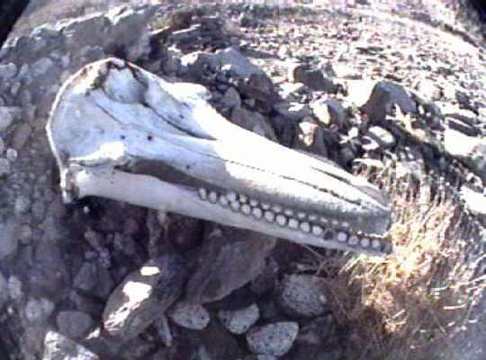
11/01/94 15 kilsaa melomalla. 69 jäljellä. Vitun GPS, se ei toimi kunnolla. Eiii saamari, nämä meksikoilaisten kartathan ne on tämmösiä. Olen poikki. Kanoottikin on taas hajalla. 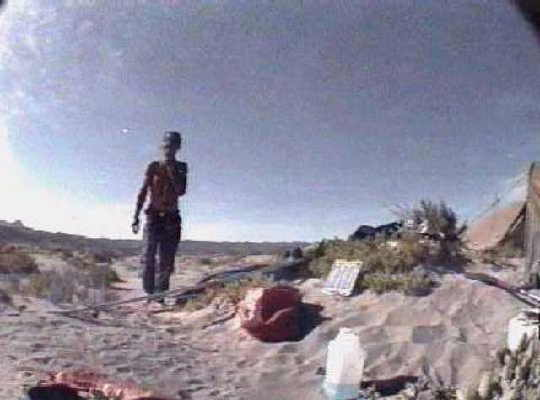
12/01/94 Kanootti on korjattu. Löysin palmun, mutta ei siinä kasvanut mitään syötävää. Tämä paikka lienee Punta Trinidad. (N27`49'37'') Siksi täällä on palmuja. Koko ranta on täynnä tyhjiä kalastajien kaislamajoja. Kalastuskohteena olivat olleet lähinna kilpikonnat ja haikalat, omituinen valikoima. Lisäksi täällä on järvi, mahdollisesti suolaton, ja aasia ja lehmiä ja jonkinlainen farmi tuolla vuorten juuressa. Muttei farmissakaan ollut asunut ketään vuosikausiin. Löysin paljon kalastajien nailonverkkoja, mutta aurinko oli haurastuttanut ne käyttökelvottomaksi. Mitä ne sanoo, että muovi säilyy luonnossa ikuisesti. Useimmat muovipullot ja muut esineet, mitä täältä löytää, hajoavat käsiin kun niitä yrittää käyttää. Itse asiassa muovi näyttää hajoavan täällä paljon nopeammin kuin rauta, liekö syynä se, ettei koskaan sada. Kahden viikon päästä pitäisi olla Los Angelesin lentoasemalla. Luulis kahdessa viikossa ehtivän, muttei sitä koskaan tiedä.
13/01/94 Yritin aamulla lähteä hyökyjen sekaan mutta ne työnsivät minut tylysti maihin, mela katkesi. 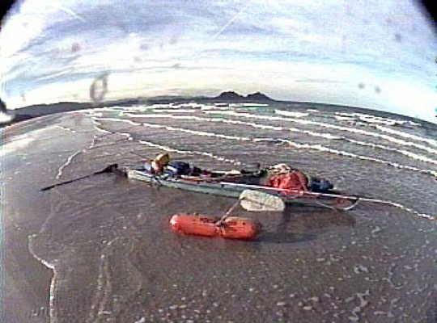
14/01/94 Pääsin lopulta matkaan ja rantauduin parin kalastajn naapureiksi. Iltanuotion kanssa sekoillessa astuin kekäleen päälle paljaalla jalalla.
16/01/94 15 kilsaa jäljellä! Vau. Ostankin huomenna suklaata, viinaa ja tupakkaa. Tässä järjestyksessä.
17/01/94 Jokapäiväinen tuulenrähäkkä alkoi kello 11, mutta pääsin juuri ja juuri Santa ROsaliaan. En kuitenkaan uskaltanut mennä varsinaiseen satamaan asti, kun sen suojavallit tekivät kamalan ristiaallokon sisääntulopaikan eteen. Ompa kurjasti suunniteltu satama. 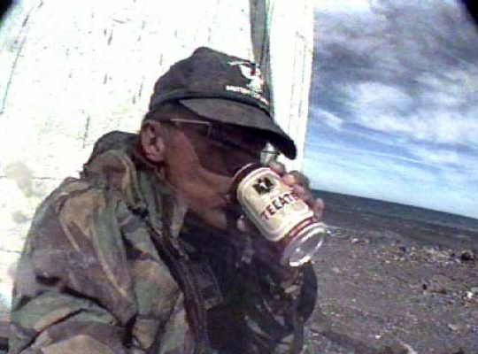 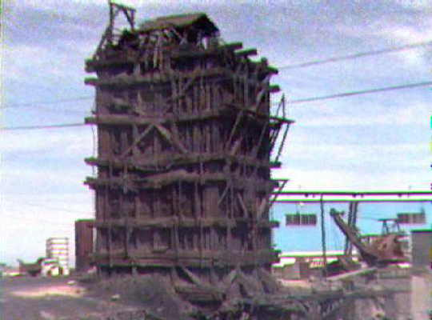 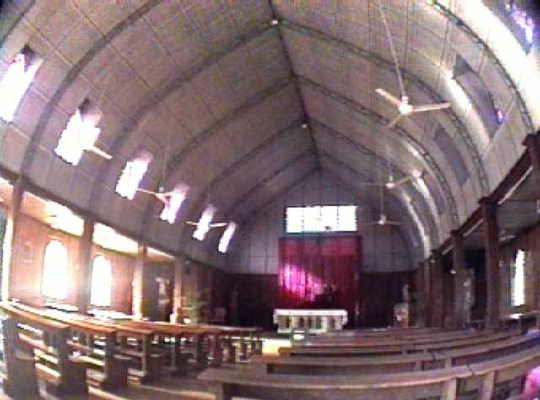
18/01/94 20 taalan hotellli. No comprendo englese. Yo so Finlandese. Al bargo de San Felipe. 40 dias. Löysin Bussiterminaalin.
20/01/94 Lähdin hotellista, mutta en jaksanut meloa pitkällekään. Syön koko ajan liikaa. Vatsaan koskeee. Sitä se nälkä tekee.
21/01/94 Ei mun kyllä kannata huomenna lähteä, eihän? Onneksi myrskyää.
22/01/94 Huomenna varmaan lähden. 23/01/94 Sain kalan, söin sen ja sen jälkeen en keksinyt muuta vaan meloin bussiasemalle. 14 tunnin bussimatka, argh. 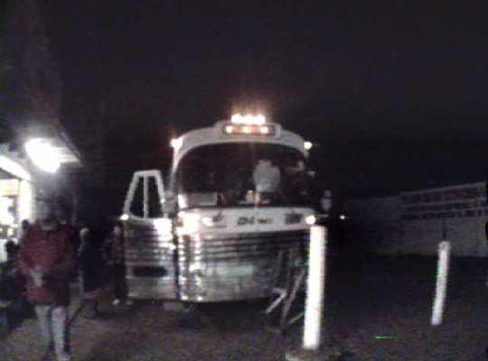
24/01/94 Tihuana hotel salzaral pari yötä 20 taalaa. Saamari tätä mutaa, kun sataa koko ajan. Saamari täällä on metelöiviä kakaroita. Eikö ne voi käyttää kondomia tai jotain. Mainioita näyttelemistä näissä meksikoilaisissa saippuaoopperoissa. "una mujere, dos caminos" taitaa olla kyllä brasialainen.
27/01/94 62 dollarin suite LAXissa, "Trade Winds", tää on hyvä.
28/01/94 Saamari Deltalla en lennä kyllä enää ikinä. Ekaks tuli 110 dollarin lisämaksu, väärän kokonen. Sitten 300 dollaria ylipainosta. Heittelin kamoja hikipäässä roskikseen, vanhoja alusvaatteita, ruostuneita kalastusvehkeitä. Kun 3 kiloa oli jäljellä, antoivat armoa. Auch heitin vahingossa sukelluslasit, joissa oli optiikka, menenään. Matkailu köyhdyttää ja laihduttaa, sanon vain.